library(tidyverse)
library(knitr)
library(ggformula)
library(GGally)
library(dplyr)
library(mosaic)
library(broom)
library(RColorBrewer)Logistic Regression Analysis of Spending Control Based on Materialism and Impulsivity
Loading Relevant Packages
Loading the Data Set
finance_data <- read.csv("data/NFWBS_PUF_2016_data.csv")Creating a New Data Frame with Relevant Variables
finance <- data.frame(
spending_habit = finance_data$FS1_6,
consult_budget = finance_data$PROPPLAN_1,
frugality = finance_data$FRUGALITY,
materialism = finance_data$MATERIALISM_3,
impulsive = finance_data$SELFCONTROL_1,
resist_temptation = finance_data$SELFCONTROL_2,
age_group = finance_data$agecat
)The result:
glimpse(finance)Rows: 6,394
Columns: 7
$ spending_habit <int> 3, 3, 3, 3, 3, 4, 4, 4, 5, 3, 5, 4, 5, 2, 4, 4, 4, 3…
$ consult_budget <int> 5, 3, 4, 3, 3, 5, 4, 4, 4, 4, 5, 4, 5, 1, 5, 5, 2, 4…
$ frugality <int> 6, 5, 5, 6, 4, 5, 4, 5, 4, 5, 6, 5, 6, 6, 6, 5, 5, 5…
$ materialism <int> 4, 3, 3, -1, 3, 2, 2, 3, 3, 3, 3, 3, 2, 1, 2, 1, 2, …
$ impulsive <int> 2, 2, 3, -1, 3, 1, 1, 3, 4, 2, 2, 2, 2, 1, 1, 1, 3, …
$ resist_temptation <int> 3, 4, 3, -1, 3, 3, 3, 1, 3, 3, 3, 4, 3, 3, 3, 3, 4, …
$ age_group <int> 8, 3, 3, 3, 2, 2, 3, 2, 3, 4, 1, 6, 1, 2, 2, 2, 1, 1…Data Dictionary
The following are responses from the survey, along with their scales of measurement.
Response variable(s):
spending_habit: “I know how to keep myself from spending too much.” (1-5)- 1: Not at all
- 2: Very little
- 3: Somewhat
- 4: Very well
- 5: Completely
Explanatory variable(s):
consult_budget: “I consult my budget to see how much I have left.” (1-5)1: Strongly disagree
2: Disagree
3: Neither agree nor disagree
4: Agree
5: Strongly agree
frugality: “If I can re-use an item I already have, there’s no sense in buying something new.” (1-6)1: Strongly disagree
2: Disagree
3: Disagree slightly
4: Agree slightly
5: Agree
6: Strongly agree
materialism: “I like to own things that impress people.” (1-5)1: Strongly disagree
2: Disagree
3: Neither agree nor disagree
4: Agree
5: Strongly agree
impulsive: “I often act without thinking through all the alternatives.” (1-4)1: Not at all
2: Not very well
3: Very well
4: Completely well
resist_temptation: “I am good at resisting temptation.” (1-4)1: Not at all
2: Not very well
3: Very well
4: Completely well
Demographic data (could also be explanatory):
age_group: Respondent age, grouped into categories:- 1: 18-24
- 2: 25-34
- 3: 35-44
- 4: 45-54
- 5: 55-61
- 6: 62-69
- 7: 70-74
- 8: 75+
Cleaning the Data
The following variables include a score of -1 to indicate that the respondent refused to answer: spending_habit, frugality, materialism, impulsive, resist_temptation.
That is not helpful in this instance, so I removed all observations with that score. Note that, per the official data dictionary provided by the CFPB, there were no (relevant) observations that included the number 0.
#I filtered the data frame to only include observations that are not -1.
finance <- finance |>
filter(spending_habit != -1,
frugality != -1,
materialism != -1,
impulsive != -1,
resist_temptation != -1)There are now 6194 observations left from the initial 6394 observations.
Since age_group has the ages grouped into categories ranging from 1-8, I decided to use it as a categorical variable. To make things easier, I renamed the categories to reflect the age range being represented.
finance <- finance |>
mutate(age_group = case_when(
age_group == 1 ~ "18-24",
age_group == 2 ~ "25-34",
age_group == 3 ~ "35-44",
age_group == 4 ~ "45-54",
age_group == 5 ~ "55-61",
age_group == 6 ~ "62-69",
age_group == 7 ~ "70-74",
age_group == 8 ~ "75+"
))Lastly, since these are categorical variables, I factored them so that they can be used as such.
Note: Later, I will be using a logistic regression model. I kept the original spending habit variable and added a factored one and a binary one. Since that variable is measured on a scale of 1-5, going from negative to positive, responses ranging from 1-3 were grouped as 0, and #responses 4 and 5 were grouped as 1. Including 3, which is neutral, in group 0 was an analytical decision.
finance <- finance |>
mutate(
spending_habit_original = spending_habit,
spending_habit = factor(spending_habit),
spending_binary = if_else(spending_habit_original >= 4, 1, 0),
consult_budget = factor(consult_budget),
frugality = factor(frugality),
materialism = factor(materialism),
impulsive = factor(impulsive),
resist_temptation = factor(resist_temptation),
age_group = factor(age_group)
)The result:
kable(head(finance))| spending_habit | consult_budget | frugality | materialism | impulsive | resist_temptation | age_group | spending_habit_original | spending_binary |
|---|---|---|---|---|---|---|---|---|
| 3 | 5 | 6 | 4 | 2 | 3 | 75+ | 3 | 0 |
| 3 | 3 | 5 | 3 | 2 | 4 | 35-44 | 3 | 0 |
| 3 | 4 | 5 | 3 | 3 | 3 | 35-44 | 3 | 0 |
| 3 | 3 | 4 | 3 | 3 | 3 | 25-34 | 3 | 0 |
| 4 | 5 | 5 | 2 | 1 | 3 | 25-34 | 4 | 1 |
| 4 | 4 | 4 | 2 | 1 | 3 | 35-44 | 4 | 1 |
Univariate Plots
#I wanted to use a specific colour, so I assigned its hex code to a variable.
special_purple <- "#412d5e"Spending Habits, Consulting a Budget
spending_bar <- gf_bar( ~ spending_habit, data = finance, fill = special_purple) |>
gf_labs(x = "Scores (Ranging From 'Not At All' to 'Completely')",
y = "Number of Respondents",
title = "Distribution of Responses about Spending Habits",
caption = "Prompt: 'I know how to keep myself from spending too much.'") +
theme_minimal() +
theme(plot.caption = element_text(hjust = 0, size = 12),
plot.title = element_text(size = 16))
#---------------------------------------------------------------------------
budget_bar <- gf_bar( ~ consult_budget, data = finance, fill = special_purple) |>
gf_labs(x = "Scores (Ranging from 'Strongly Disagree' to 'Strongly Agree')",
y = "Number of Respondents",
title = "Distribution of Responses about Consulting a Budget",
caption = "Prompt: 'I consult my budget to see how much I have left.'") +
theme_minimal() +
theme(plot.caption = element_text(hjust = 0, size = 12),
plot.title = element_text(size = 16))spending_bar
budget_bar
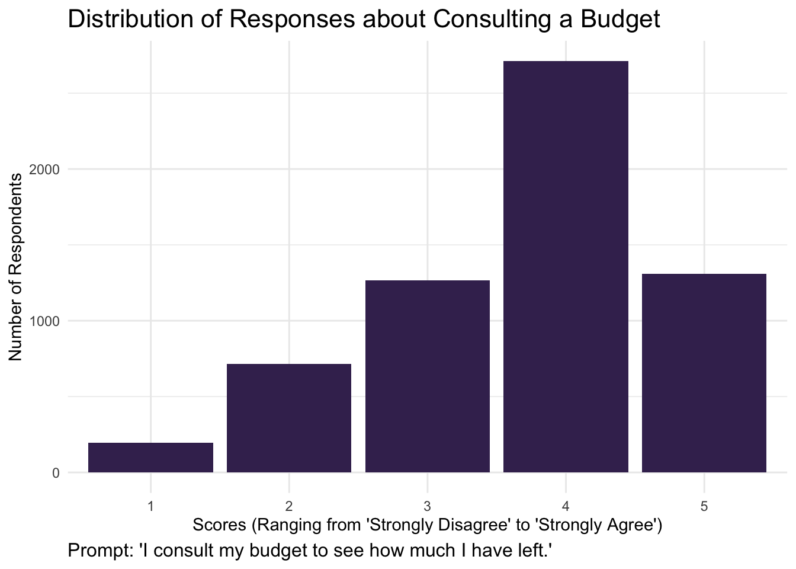
Frugality, Materialism
frugality_bar <- gf_bar( ~ frugality, data = finance, fill = special_purple) |>
gf_labs(x = "Scores (Ranging from 'Strongly Disagree' to 'Strongly Agree')",
y = "Number of Respondents",
title = "Distribution of Responses about Frugality",
caption = "Prompt: 'If I can reuse an item I already have, there's no sense in buying \nsomething new.'") +
theme_minimal() +
theme(plot.caption = element_text(hjust = 0, size = 12),
plot.title = element_text(size = 16))
#---------------------------------------------------------------------------
materialism_bar <- gf_bar( ~ materialism, data = finance, fill = special_purple) |>
gf_labs(x = "Scores (Ranging from 'Strongly Disagree' to 'Strongly Agree')",
y = "Number of Respondents",
title = "Distribution of Responses about Materialism",
caption = "Prompt: 'I like to own things that impress people.'") +
theme_minimal() +
theme(plot.caption = element_text(hjust = 0, size = 12),
plot.title = element_text(size = 16))frugality_bar
materialism_bar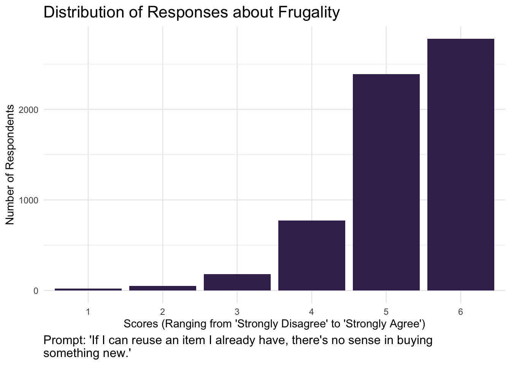
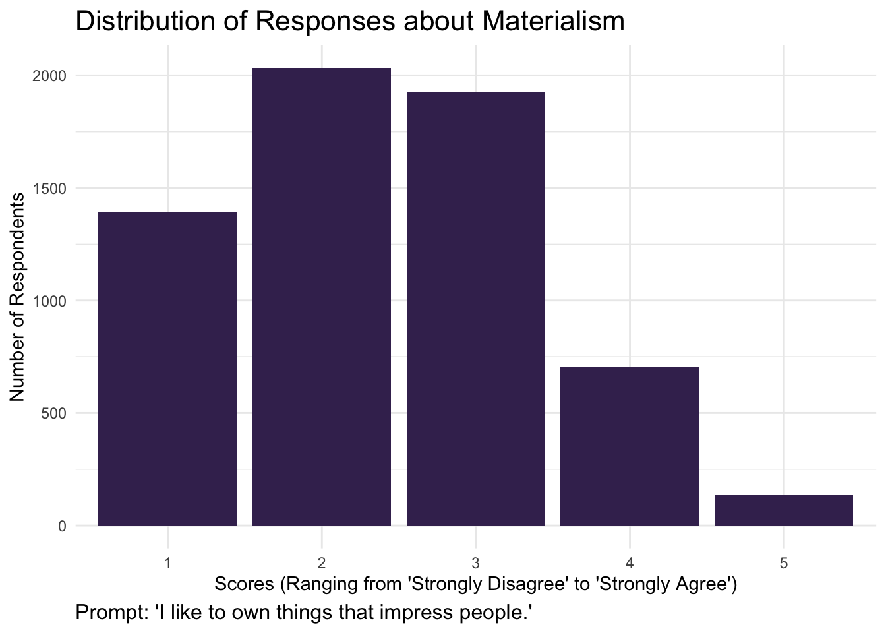
Impulsivity, Temptation
impulsive_bar <- gf_bar( ~ impulsive, data = finance, fill = special_purple) |>
gf_labs(x = "Scores (Ranging from 'Not At All' to 'Completely Well')",
y = "Number of Respondents",
title = "Distribution of Responses about Impulsivity",
caption = "Prompt: 'I often act without thinking through all the alternatives.'") +
theme_minimal() +
theme(plot.caption = element_text(hjust = 0, size = 12),
plot.title = element_text(size = 16))
#---------------------------------------------------------------------------
temptation_bar <- gf_bar( ~ resist_temptation, data = finance, fill = special_purple) |>
gf_labs(x = "Scores (Ranging from 'Not At All' to 'Completely Well')",
y = "Number of Respondents",
title = "Distribution of Responses about Resisting Temptation",
caption = "Prompt: 'I am good at resisting temptation.'") +
theme_minimal() +
theme(plot.caption = element_text(hjust = 0, size = 12),
plot.title = element_text(size = 16))impulsive_bar
temptation_bar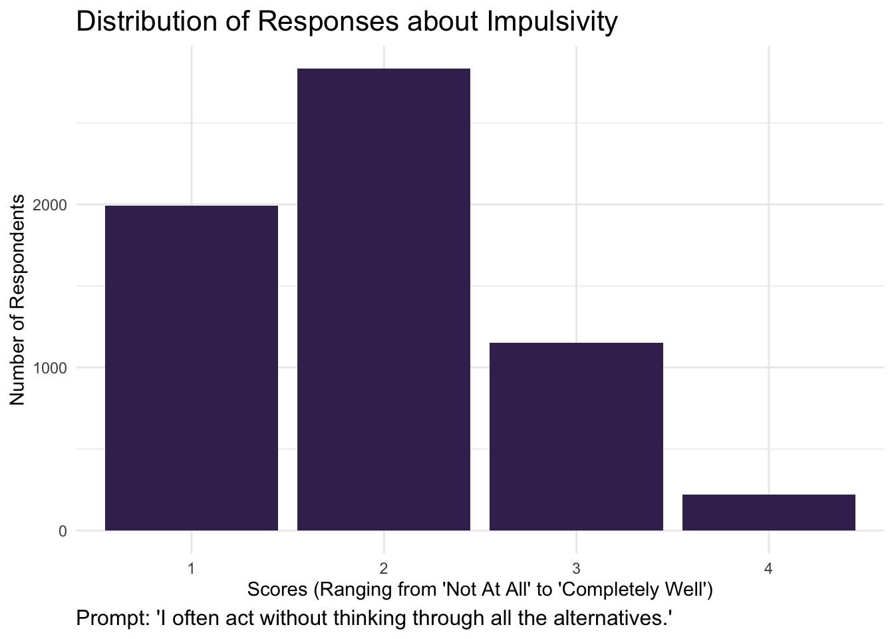
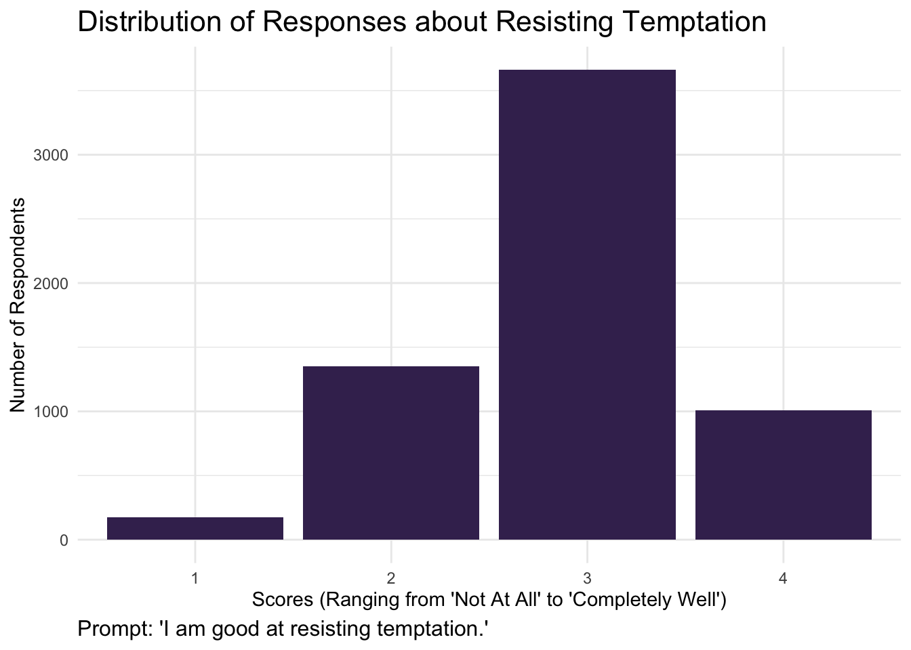
Age
age_group_bar <- gf_bar( ~ age_group, data = finance, fill = special_purple) |>
gf_labs(x = "Age Groups",
y = "Number of Respondents",
title = "Distribution of Respondent Ages") +
theme_minimal() +
theme(plot.title = element_text(size = 16))age_group_bar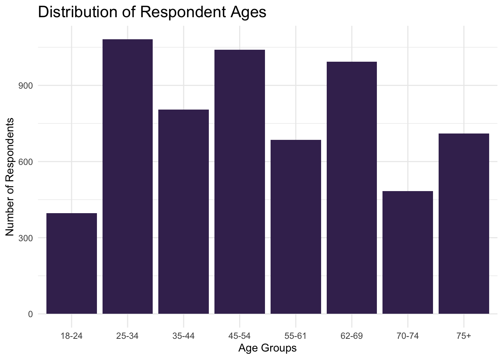
Bivariate Plots
# The lightest color for my desired palette is too light, so I'm modifying it to skip it
purple_palette <- brewer.pal(7, "Purples")[3:7]Spending Habits & Consulting a Budget
spending_budget_bar <- gf_bar(~ consult_budget, data = finance, fill = ~ spending_habit, position = "fill") |>
gf_labs(x = "Scores (Consulting a Budget)",
y = "Proportion of Respondents",
title = "Spending Habits & Consulting a Budget",
subtitle = "'I know how to keep myself from spending too much' & 'I consult my budget to see how much I have left.'",
caption = "* 'Spending Habits' scores range from 'not at all' (1) to 'completely' (5) \n* 'Consulting a Budget' scores range from 'strongly disagree' (1) to 'strongly agree' (5)",
fill = "Scores \n(Spending \nHabits)") +
theme_minimal() +
scale_fill_manual(values = purple_palette) +
theme(plot.subtitle = element_text(size = 9.8),
plot.caption = element_text(hjust = 0, size = 10))
#---------------------------------------------------------------------------
spending_budget_tally <- tally(spending_habit ~ consult_budget, data = finance)spending_budget_bar
spending_budget_tally
consult_budget
spending_habit 1 2 3 4 5
1 28 27 25 23 11
2 35 80 93 130 36
3 37 235 459 811 217
4 38 245 493 1290 442
5 57 128 196 456 603Spending Habits & Frugality
spending_frugality_bar <- gf_bar(~ frugality, data = finance, fill = ~ spending_habit, position = "fill") |>
gf_labs(x = "Scores (Frugality)",
y = "Proportion of Respondents",
title = "Spending Habits & Frugality",
subtitle = "'I know how to keep myself from spending too much' & 'If I can reuse an item I already have, there's \nno sense in buying something new.'",
caption = "* 'Spending Habits' scores range from 'not at all' (1) to 'completely' (5) \n* 'Frugality' scores range from 'strongly disagree' (1) to 'strongly agree' (5)",
fill = "Scores \n(Spending \nHabits)") +
theme_minimal() +
scale_fill_manual(values = purple_palette) +
theme(plot.subtitle = element_text(size = 10),
plot.caption = element_text(hjust = 0, size = 10))
#---------------------------------------------------------------------------
spending_frugality_tally <- tally(spending_habit ~ frugality, data = finance)spending_frugality_bar
spending_frugality_tally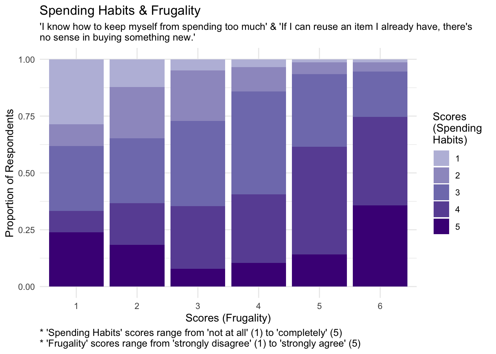
frugality
spending_habit 1 2 3 4 5 6
1 6 6 9 27 31 35
2 2 11 40 82 125 114
3 6 14 68 351 763 557
4 2 9 50 233 1134 1080
5 5 9 14 81 337 994Spending Habits & Materialism
spending_materialism_bar <- gf_bar(~ materialism, data = finance, fill = ~ spending_habit, position = "fill") |>
gf_labs(x = "Scores (Materialism)",
y = "Proportion of Respondents",
title = "Spending Habits & Materialism",
subtitle = "'I know how to keep myself from spending too much' & 'I like to own things that impress people'",
caption = "* 'Spending Habits' scores range from 'not at all' (1) to 'completely' (5) \n* 'Materialism' scores range from 'strongly disagree' (1) to 'strongly agree' (5)",
fill = "Scores \n(Spending \nHabits)") +
theme_minimal() +
scale_fill_manual(values = purple_palette) +
theme(plot.subtitle = element_text(size = 10.5),
plot.caption = element_text(hjust = 0, size = 10))
#---------------------------------------------------------------------------
spending_materialism_tally <- tally(spending_habit ~ materialism, data = finance) spending_materialism_bar
spending_materialism_tally
materialism
spending_habit 1 2 3 4 5
1 26 12 40 26 10
2 72 108 105 73 16
3 294 546 623 254 42
4 535 927 788 230 28
5 466 439 371 122 42Spending Habits & Impulsivity
spending_impulsive_bar <- gf_bar(~ impulsive, data = finance, fill = ~ spending_habit, position = "fill") |>
gf_labs(x = "Scores (Impulsivity)",
y = "Proportion of Respondents",
title = "Spending Habits & Impulsivity",
subtitle = "'I know how to keep myself from spending too much' & 'I often act without thinking \nthrough all the alternatives'",
caption = "* 'Spending Habits' scores range from 'not at all' (1) to 'completely' (5) \n* 'Impulsivity' scores range from 'not at all' (1) to 'completely well' (4)",
fill = "Scores \n(Spending \nHabits)") +
theme_minimal() +
scale_fill_manual(values = purple_palette) +
theme(plot.subtitle = element_text(size = 11),
plot.caption = element_text(hjust = 0, size = 10))
#---------------------------------------------------------------------------
spending_impulsive_tally <- tally(spending_habit ~ impulsive, data = finance)spending_impulsive_bar
spending_impulsive_tally
impulsive
spending_habit 1 2 3 4
1 15 40 42 17
2 56 156 132 30
3 374 885 438 62
4 800 1244 412 52
5 747 506 128 59Spending Habits & Resisting Temptation
spending_temptation_bar <- gf_bar(~ resist_temptation, data = finance, fill = ~ spending_habit, position = "fill") |>
gf_labs(x = "Scores (Resisting Temptation)",
y = "Proportion of Respondents",
title = "Spending Habits & Resisting Temptation",
subtitle = "'I know how to keep myself from spending too much' & 'I am good at resisting temptation.'",
caption = "* 'Spending Habits' scores range from 'not at all' (1) to 'completely' (5) \n* 'Resisting Temptation' scores range from 'not at all' (1) to 'completely well' (4)",
fill = "Scores \n(Spending \nHabits)") +
theme_minimal() +
scale_fill_manual(values = purple_palette) +
theme(plot.subtitle = element_text(size = 11),
plot.caption = element_text(hjust = 0, size = 10))
#---------------------------------------------------------------------------
spending_temptation_tally <- tally(spending_habit ~ resist_temptation, data = finance)spending_temptation_bar
spending_temptation_tally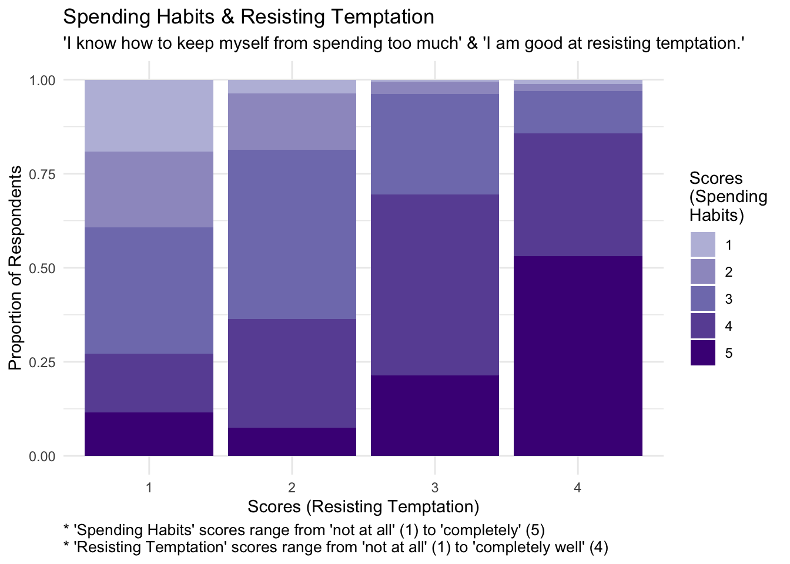
resist_temptation
spending_habit 1 2 3 4
1 33 50 20 11
2 35 202 117 20
3 58 609 979 113
4 27 391 1761 329
5 20 101 783 536Spending Habits & Age
spending_age_bar <- gf_bar(~ age_group, data = finance, fill = ~ spending_habit, position = "fill") |>
gf_labs(x = "Age Groups",
y = "Proportion of Respondents",
title = "Spending Habits & Age",
subtitle = "'I know how to keep myself from spending too much' & respondent ages",
caption = "* 'Spending Habits' scores range from 'not at all' (1) to 'completely' (5)",
fill = "Scores \n(Spending \nHabits)") +
theme_minimal() +
scale_fill_manual(values = purple_palette) +
theme(plot.subtitle = element_text(size = 11),
plot.caption = element_text(hjust = 0, size = 10))
#---------------------------------------------------------------------------
spending_age_tally <- tally(spending_habit ~ age_group, data = finance)spending_age_bar
spending_age_tally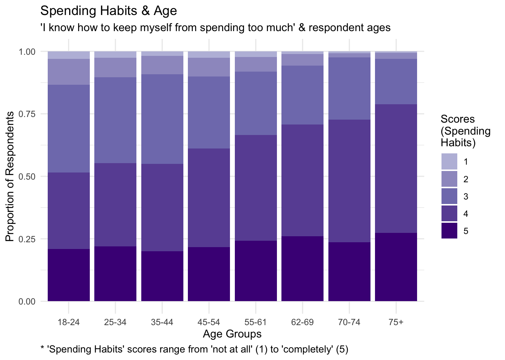
age_group
spending_habit 18-24 25-34 35-44 45-54 55-61 62-69 70-74 75+
1 12 27 15 27 15 10 4 4
2 41 85 59 77 41 46 8 17
3 139 372 288 301 174 235 120 130
4 121 360 281 409 290 444 238 365
5 83 237 161 226 166 258 114 195Generalized Pairs Plot
ggpairs(finance)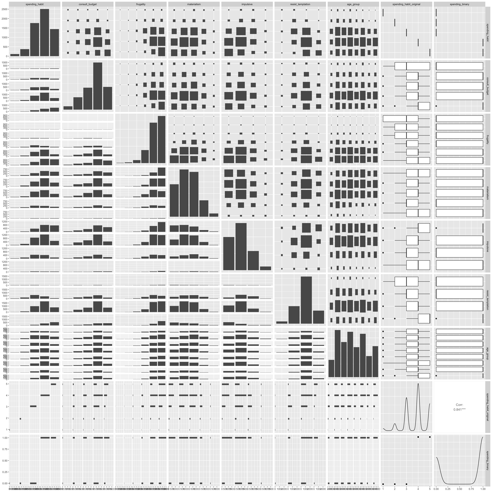
Adjustments & New Plots
I decided to narrow my scope to young adults (ages 18-24). This reduced my number of observations to 396 (from 6195).
young_adult <- finance |> filter(age_group == "18-24")Univariate: Spending Habits
ya_spending_bar <- gf_bar( ~ spending_habit, data = young_adult, fill = "darkseagreen4") |>
gf_labs(x = "Scores (Ranging From 'Not At All' to 'Completely')",
y = "Number of Respondents",
title = "Distribution of Responses about Spending Habits in Young Adults (18-24)",
caption = "Prompt: 'I know how to keep myself from spending too much.'") +
theme_minimal() +
theme(plot.caption = element_text(hjust = 0, size = 12),
plot.title = element_text(size = 16))ya_spending_bar
# The lightest color for my desired palette is too light, so I'm modifying it to skip it
green_palette <- brewer.pal(7, "Greens")[3:7]Bivariate: Spending Habits & Materialism
ya_spending_materialism_bar <- gf_bar(~ materialism, data = young_adult, fill = ~ spending_habit, position = "fill") |>
gf_labs(x = "Scores (Materialism)",
y = "Proportion of Respondents",
title = "Spending Habits & Materialism in Young Adults (18-24)",
subtitle = "'I know how to keep myself from spending too much' & 'I like to own things that impress people'",
caption = "* 'Spending Habits' scores range from 'not at all' (1) to 'completely' (5) \n* 'Materialism' scores range from 'strongly disagree' (1) to 'strongly agree' (5)",
fill = "Scores \n(Spending \nHabits)") +
theme_minimal() +
scale_fill_manual(values = green_palette) +
theme(plot.subtitle = element_text(size = 10.5),
plot.caption = element_text(hjust = 0, size = 10))
#---------------------------------------------------------------------------
ya_spending_materialism_jitter <- young_adult |>
gf_jitter(spending_binary ~ materialism, color = ~ materialism) |>
gf_labs(x = "Scores (Materialism)",
y = "Spending Habits",
title = "Spending Habits & Materialism in Young Adults (18-24)",
subtitle = "'I know how to keep myself from spending too much' & 'I like to own things that impress people'",
caption = "* 'Spending Habits' have two categories — 'Undesirable' (0) and 'Desirable' (1) \n* 'Materialism' scores range from 'strongly disagree' (1) to 'strongly agree' (5)",
color = "Scores (Materialism)") +
theme_minimal() +
scale_color_manual(values = green_palette) +
theme(plot.subtitle = element_text(size = 11),
plot.caption = element_text(hjust = 0, size = 10))
#---------------------------------------------------------------------------
ya_spending_materialism_tally <- tally(spending_habit ~ materialism, data = young_adult)ya_spending_materialism_jitter
ya_spending_materialism_tally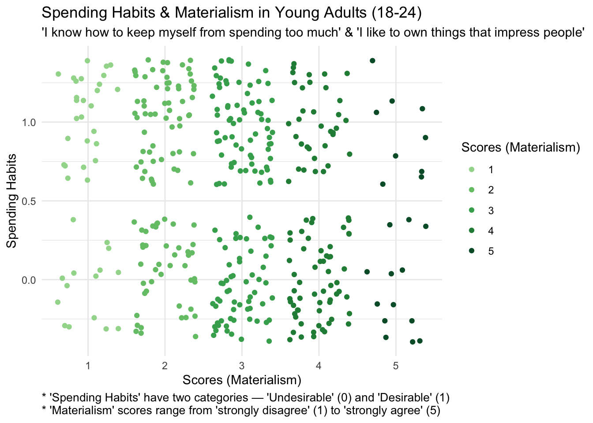
materialism
spending_habit 1 2 3 4 5
1 2 1 3 6 0
2 6 10 8 14 3
3 7 33 50 39 10
4 14 38 39 26 4
5 13 23 33 9 5Bivariate: Spending Habits & Impulsivity
ya_spending_impulsive_bar <- gf_bar(~ impulsive, data = young_adult, fill = ~ spending_habit, position = "fill") |>
gf_labs(x = "Scores (Impulsivity)",
y = "Proportion of Respondents",
title = "Spending Habits & Impulsivity in Young Adults (18-24)",
subtitle = "'I know how to keep myself from spending too much' & 'I often act without thinking \nthrough all the alternatives'",
caption = "* 'Spending Habits' scores range from 'not at all' (1) to 'completely' (5) \n* 'Impulsivity' scores range from 'not at all' (1) to 'completely well' (4)",
fill = "Scores \n(Spending \nHabits)") +
theme_minimal() +
scale_fill_manual(values = green_palette) +
theme(plot.subtitle = element_text(size = 11),
plot.caption = element_text(hjust = 0, size = 10))
#---------------------------------------------------------------------------
ya_spending_impulsive_jitter <- young_adult |>
gf_jitter(spending_binary ~ impulsive, color = ~ impulsive) |>
gf_labs(x = "Scores (Impulsivity)",
y = "Spending Habits",
title = "Spending Habits & Impulsivity in Young Adults (18-24)",
subtitle = "'I know how to keep myself from spending too much' & 'I often act without thinking \nthrough all the alternatives'",
caption = "* 'Spending Habits' have two categories — 'Undesirable' (0) and 'Desirable' (1) \n* 'Impulsivity' scores range from 'not at all' (1) to 'completely well' (4)",
color = "Scores (Impulsivity)") +
theme_minimal() +
scale_color_manual(values = green_palette) +
theme(plot.subtitle = element_text(size = 11),
plot.caption = element_text(hjust = 0, size = 10))
#---------------------------------------------------------------------------
ya_spending_impulsive_tally <- tally(spending_habit ~ impulsive, data = young_adult)ya_spending_impulsive_jitter
ya_spending_impulsive_tally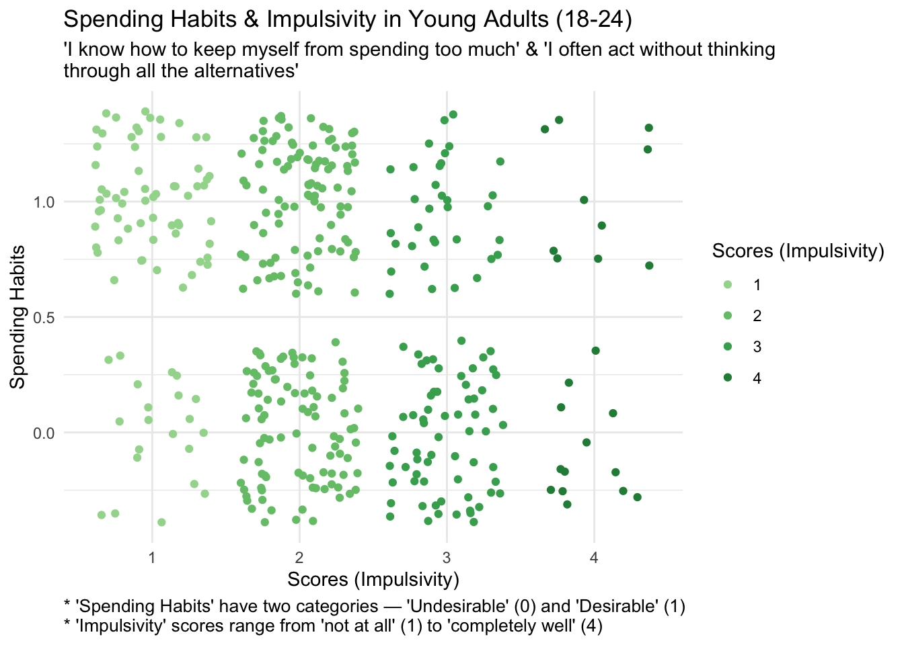
impulsive
spending_habit 1 2 3 4
1 1 3 5 3
2 3 18 17 3
3 17 72 43 7
4 27 63 26 5
5 35 35 8 5Comparisons
Spending Habits in Total Sample vs Young Adults
spending_bar
ya_spending_bar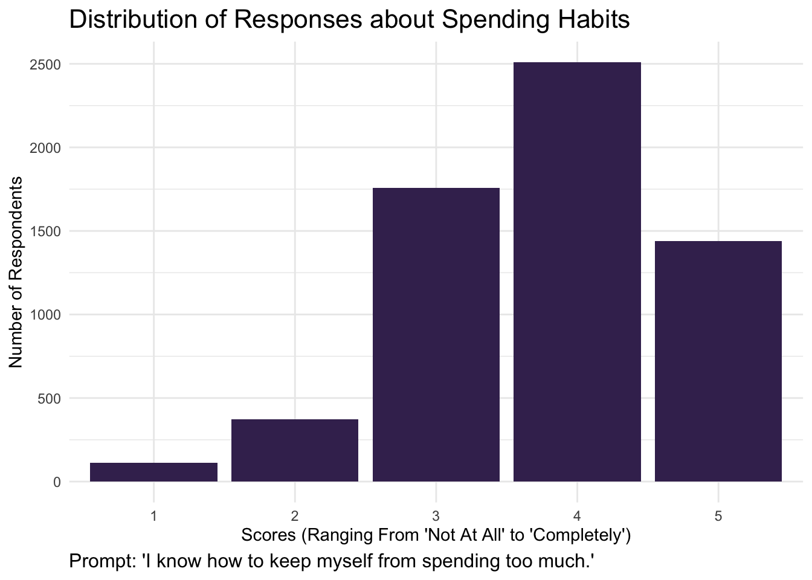
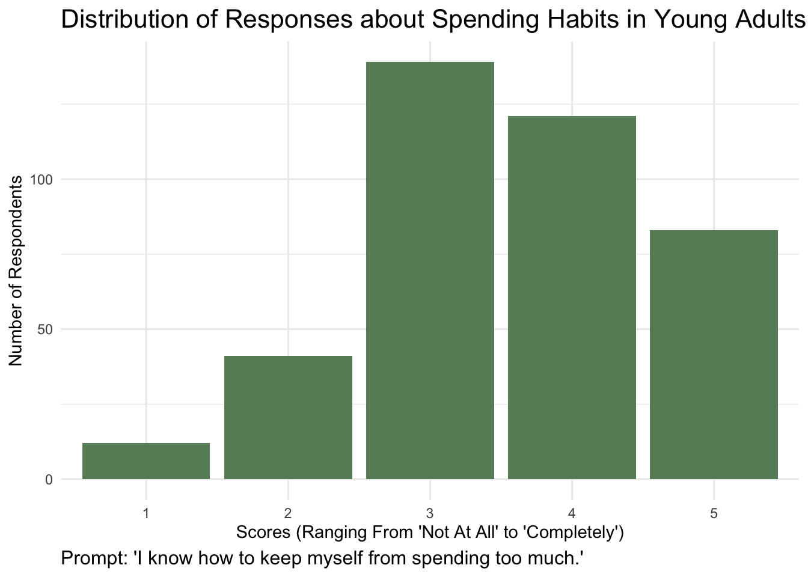
Spending Habits & Materialism in Total Sample vs Young Adults
spending_materialism_bar
ya_spending_materialism_bar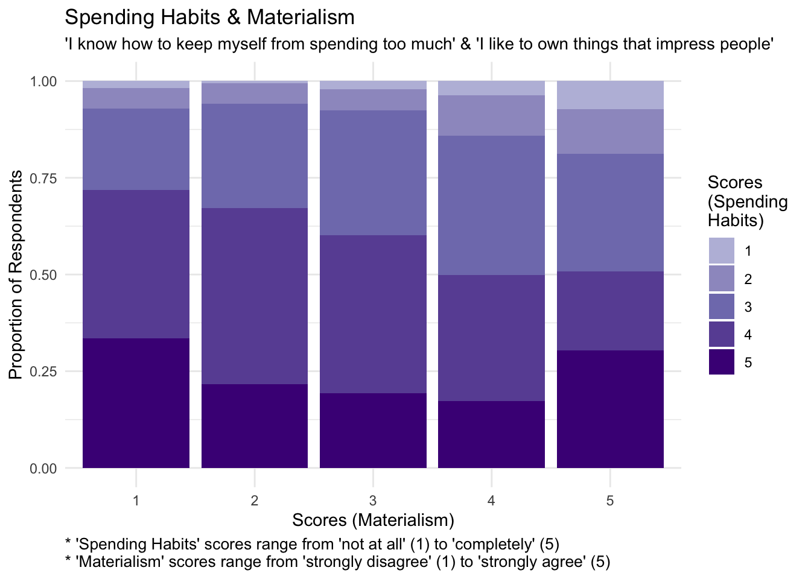
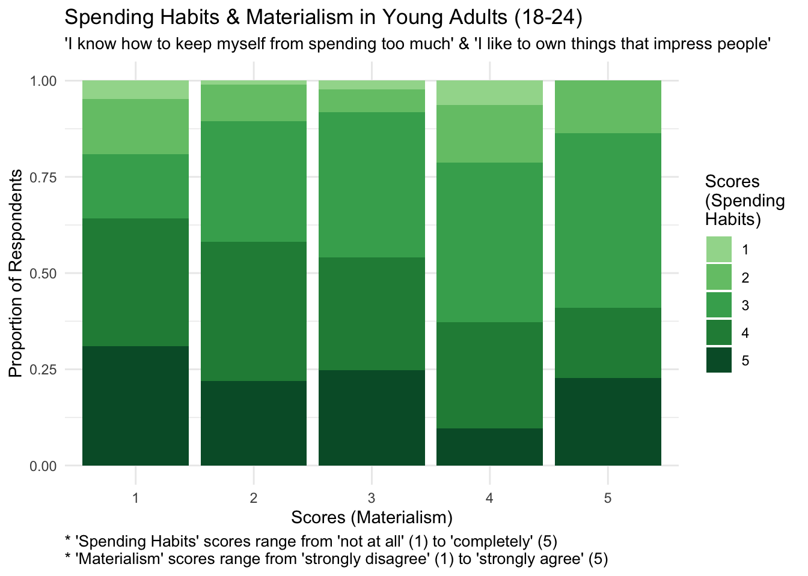
Spending Habits & Impulsivity in Total Sample vs Young Adults
spending_impulsive_bar
ya_spending_impulsive_bar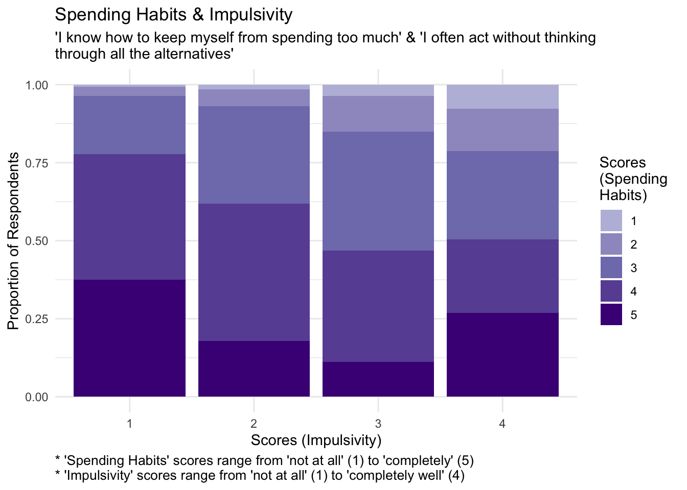
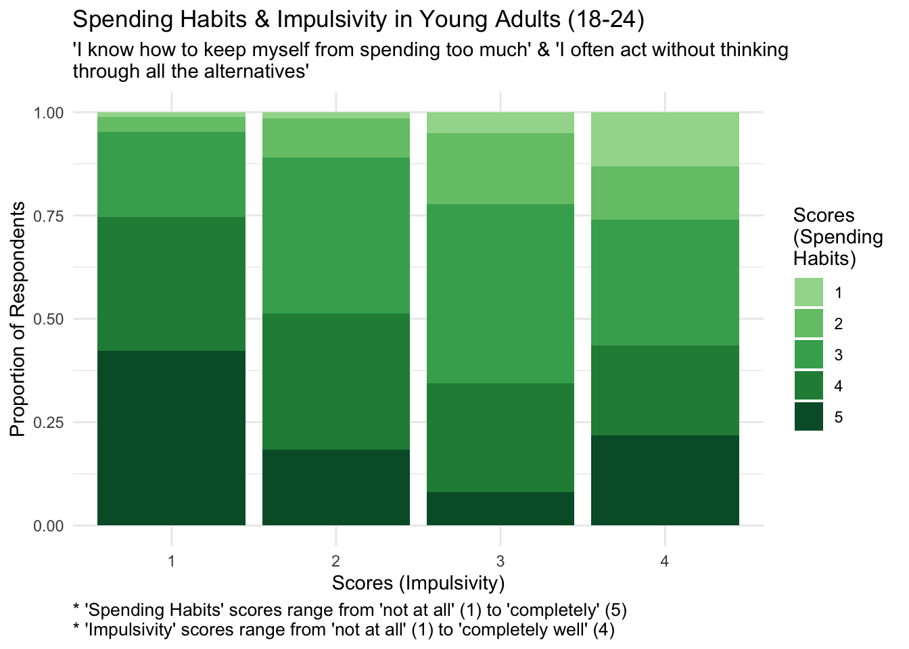
Regression Models
Making the Models
Model 1: Using Materalism to Predict Spending Habits in Young Adults
materialism_fit <- glm(spending_binary ~ materialism, data = young_adult, family = "binomial")
tidy(materialism_fit, conf.int = TRUE, conf.level = 0.95) |> kable()| term | estimate | std.error | statistic | p.value | conf.low | conf.high |
|---|---|---|---|---|---|---|
| (Intercept) | 0.5877867 | 0.3220306 | 1.8252511 | 0.0679631 | -0.0296143 | 1.2435269 |
| materialism2 | -0.2611024 | 0.3779212 | -0.6908913 | 0.4896339 | -1.0185642 | 0.4705224 |
| materialism3 | -0.4219944 | 0.3660410 | -1.1528610 | 0.2489674 | -1.1579989 | 0.2848585 |
| materialism4 | -1.1099760 | 0.3862956 | -2.8733854 | 0.0040610 | -1.8862296 | -0.3649984 |
| materialism5 | -0.9555114 | 0.5401276 | -1.7690475 | 0.0768860 | -2.0431695 | 0.0899617 |
glance(materialism_fit) |>
dplyr::select(AIC, BIC) |> kable()| AIC | BIC |
|---|---|
| 544.893 | 564.8001 |
Model 2: Using Impulsivity to Predict Spending Habits in Young Adults
impulsive_fit <- glm(spending_binary ~ impulsive, data = young_adult, family = "binomial")
tidy(impulsive_fit, conf.int = TRUE, conf.level = 0.95) |> kable()| term | estimate | std.error | statistic | p.value | conf.low | conf.high |
|---|---|---|---|---|---|---|
| (Intercept) | 1.082612 | 0.2524836 | 4.287851 | 0.0000180 | 0.605310 | 1.600491 |
| impulsive2 | -1.030244 | 0.2910408 | -3.539861 | 0.0004003 | -1.618052 | -0.472932 |
| impulsive3 | -1.730639 | 0.3294607 | -5.252945 | 0.0000001 | -2.393752 | -1.098810 |
| impulsive4 | -1.344976 | 0.4905824 | -2.741591 | 0.0061142 | -2.330713 | -0.391858 |
glance(impulsive_fit) |>
dplyr::select(AIC, BIC) |> kable()| AIC | BIC |
|---|---|
| 525.4075 | 541.3331 |
Model 3: Using Materialism & Impulsivity to Predict Spending Habits in Young Adults
add_fit <- glm(spending_binary ~ materialism + impulsive, data = young_adult, family = "binomial")
tidy(add_fit, conf.int = TRUE, conf.level = 0.95) |> kable()| term | estimate | std.error | statistic | p.value | conf.low | conf.high |
|---|---|---|---|---|---|---|
| (Intercept) | 1.4701889 | 0.4044442 | 3.6350848 | 0.0002779 | 0.6999614 | 2.2918300 |
| materialism2 | -0.1301137 | 0.3910294 | -0.3327467 | 0.7393255 | -0.9112553 | 0.6290295 |
| materialism3 | -0.3093091 | 0.3801251 | -0.8137036 | 0.4158148 | -1.0709424 | 0.4268188 |
| materialism4 | -0.9596616 | 0.4003686 | -2.3969451 | 0.0165324 | -1.7618016 | -0.1855567 |
| materialism5 | -0.7531681 | 0.5610300 | -1.3424738 | 0.1794424 | -1.8793005 | 0.3351396 |
| impulsive2 | -1.0230200 | 0.2949132 | -3.4688851 | 0.0005226 | -1.6182676 | -0.4579891 |
| impulsive3 | -1.6740079 | 0.3342415 | -5.0083788 | 0.0000005 | -2.3461278 | -1.0323964 |
| impulsive4 | -1.3098635 | 0.5042311 | -2.5977444 | 0.0093838 | -2.3204997 | -0.3284383 |
glance(add_fit) |>
dplyr::select(AIC, BIC) |> kable()| AIC | BIC |
|---|---|
| 522.7035 | 554.5548 |
Model 4: Using Materialism & Impulsivity AND Their Interaction to Predict Spending Habits in Young Adults
interact_fit <- glm(spending_binary ~ materialism + impulsive + materialism * impulsive,
data = young_adult, family = "binomial")
tidy(interact_fit) |> kable()| term | estimate | std.error | statistic | p.value |
|---|---|---|---|---|
| (Intercept) | 2.3025851 | 1.048809 | 2.1954287 | 0.0281329 |
| materialism2 | -1.3217558 | 1.152895 | -1.1464669 | 0.2516020 |
| materialism3 | -0.6539265 | 1.156919 | -0.5652310 | 0.5719167 |
| materialism4 | -2.3025851 | 1.161895 | -1.9817497 | 0.0475073 |
| materialism5 | -1.6094379 | 1.612451 | -0.9981310 | 0.3182158 |
| impulsive2 | -2.1355310 | 1.125981 | -1.8965967 | 0.0578812 |
| impulsive3 | -2.3025851 | 1.449138 | -1.5889347 | 0.1120751 |
| impulsive4 | -1.6094379 | 1.612451 | -0.9981310 | 0.3182158 |
| materialism2:impulsive2 | 1.5441665 | 1.255737 | 1.2296892 | 0.2188135 |
| materialism3:impulsive2 | 0.4540826 | 1.253748 | 0.3621800 | 0.7172175 |
| materialism4:impulsive2 | 2.0019996 | 1.267721 | 1.5792109 | 0.1142877 |
| materialism5:impulsive2 | 0.7492366 | 1.807715 | 0.4144662 | 0.6785327 |
| materialism2:impulsive3 | 0.9162907 | 1.579821 | 0.5799967 | 0.5619169 |
| materialism3:impulsive3 | 0.2019413 | 1.566954 | 0.1288751 | 0.8974565 |
| materialism4:impulsive3 | 0.9588503 | 1.600045 | 0.5992645 | 0.5489965 |
| materialism5:impulsive3 | 1.2039728 | 2.105548 | 0.5718097 | 0.5674509 |
| materialism2:impulsive4 | 1.3217558 | 1.891869 | 0.6986510 | 0.4847702 |
| materialism3:impulsive4 | -0.4446858 | 1.916193 | -0.2320674 | 0.8164857 |
| materialism4:impulsive4 | -13.9566303 | 727.700724 | -0.0191791 | 0.9846982 |
| materialism5:impulsive4 | 0.5108256 | 2.221111 | 0.2299866 | 0.8181022 |
glance(interact_fit) |>
dplyr::select(AIC, BIC) |> kable()| AIC | BIC |
|---|---|
| 535.8464 | 615.4747 |
Comparing the Models to Determine the “Best” One
| Model | Statistically Significant P-Values | AIC | BIC |
|---|---|---|---|
| 1: Materialism | 1/4 | 545 | 565 |
| 2: Impulsivity | 3/3 | 525 | 541 |
| 3: Add | 4/7 | 523 | 555 |
| 4: Interact | 1/19 | 536 | 615 |
Note: Here, a statistically significant p-value means one that is < 0.05.
Based on the table above:
Model 3 is the “best” one based on AIC.
Model 2 is the “best” one based on BIC*.
Model 2 is the “best” one based on how many of its p-values are statistically significant (100%).
Models 2 and 3 are the best ones, overall. An analytical decision was made here, which was to choose Model 3 as our main model. This is because this model has SOME credibility (see: AIC) and is most representative of our research question, whereas Model 2 only accounts for one of the two predictor variables.
- What we can learn from Model 2, however, is that impulsivity plays a huge role here.
Assumptions
Linearity
A logistic model doesn’t assume a linear relationship between the dependent and independent variables.
- Note: Should I investigate the log odds using logit? Probably. Ask about that.
Randomness:
- Met in both.
Independence:
- Somewhat met in both.
Plot of Model 3
grid <- expand.grid(
materialism = young_adult$materialism,
impulsive = young_adult$impulsive
)
grid$predicted_prob <- predict(add_fit, newdata = grid, type = "response")
predicted_probability_plot <- ggplot(grid, aes(x = materialism, y = predicted_prob, color = impulsive, group = impulsive)) +
geom_line(size = 1) +
geom_point(size = 2) +
scale_color_manual(values = green_palette) +
labs(
title = "Predicted Probability of Good Spending Habits in Young Adults (18-24)",
subtitles = "Based on Self-Reported Spending Habits Scores (Ranging from 'not at all (1) to 'completely' (5)",
caption = "* 'Materialism' scores range from 'strongly disagree' (1) to 'strongly agree' (5) \n* 'Impulsivity' scores range from 'not at all' (1) to 'completely well' (4)",
x = "Materialism Scale",
y = "Predicted Probability",
color = "Impulsivity Scale"
) +
theme_minimal() +
theme(plot.subtitle = element_text(size = 9),
plot.caption = element_text(hjust = 0, size = 10))predicted_probability_plot
Final Thoughts
The results from the graph above show that self control and materialism do affect people’s spending habits, at least to some extent. Impulsivity plays a larger role than materialism (see: the gaps between the lines), which is also shown by our other models and their results.
As materialism and impulsivity increase, “good” spending behaviours decrease.
These results likely aren’t generalisable, though. All of the variables are subjective and rely on people self-reporting. Answers aren’t necessarily accurate.
Moreover, it is hard to measure spending habits in particular because of how ambiguous the variable is. People can know how to keep themselves from spending too much, but that doesn’t exactly say whether or not they actually do so.
Summary of Environment
sessionInfo()R version 4.4.2 (2024-10-31)
Platform: aarch64-apple-darwin20
Running under: macOS Sequoia 15.2
Matrix products: default
BLAS: /Library/Frameworks/R.framework/Versions/4.4-arm64/Resources/lib/libRblas.0.dylib
LAPACK: /Library/Frameworks/R.framework/Versions/4.4-arm64/Resources/lib/libRlapack.dylib; LAPACK version 3.12.0
locale:
[1] en_US.UTF-8/en_US.UTF-8/en_US.UTF-8/C/en_US.UTF-8/en_US.UTF-8
time zone: America/Boise
tzcode source: internal
attached base packages:
[1] stats graphics grDevices utils datasets methods base
other attached packages:
[1] RColorBrewer_1.1-3 broom_1.0.7 mosaic_1.9.1 mosaicData_0.20.4
[5] Matrix_1.7-1 lattice_0.22-6 GGally_2.2.1 ggformula_0.12.0
[9] ggridges_0.5.6 scales_1.3.0 knitr_1.49 lubridate_1.9.4
[13] forcats_1.0.0 stringr_1.5.1 dplyr_1.1.4 purrr_1.0.4
[17] readr_2.1.5 tidyr_1.3.1 tibble_3.2.1 ggplot2_3.5.1
[21] tidyverse_2.0.0
loaded via a namespace (and not attached):
[1] generics_0.1.3 stringi_1.8.4 hms_1.1.3 digest_0.6.37
[5] magrittr_2.0.3 evaluate_1.0.1 grid_4.4.2 timechange_0.3.0
[9] fastmap_1.2.0 plyr_1.8.9 jsonlite_1.8.9 backports_1.5.0
[13] cli_3.6.3 labelled_2.14.0 rlang_1.1.4 munsell_0.5.1
[17] withr_3.0.2 yaml_2.3.10 tools_4.4.2 tzdb_0.4.0
[21] colorspace_2.1-1 mosaicCore_0.9.4.0 ggstats_0.8.0 vctrs_0.6.5
[25] R6_2.5.1 lifecycle_1.0.4 MASS_7.3-61 pkgconfig_2.0.3
[29] pillar_1.10.1 gtable_0.3.6 glue_1.8.0 Rcpp_1.0.14
[33] haven_2.5.4 xfun_0.50 tidyselect_1.2.1 rstudioapi_0.17.1
[37] farver_2.1.2 htmltools_0.5.8.1 labeling_0.4.3 rmarkdown_2.29
[41] compiler_4.4.2